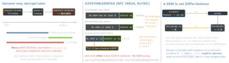
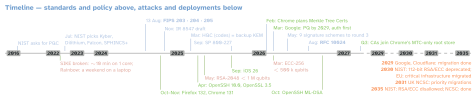

crypto · folio
In one line: A large quantum computer running Shor’s algorithm breaks every public-key primitive in use — RSA, (EC)DH, X25519, ECDSA, EdDSA — at any key size; symmetric ciphers and hashes stand. Traffic recorded today decrypts then (harvest now, decrypt later), so key exchange moved first: hybrid X25519MLKEM768, default in Chrome, Firefox, iOS 26, OpenSSL and OpenSSH. Since the 2026 estimates, signatures are urgent too: Google and Cloudflare now target 2029 for their whole migration.
Download PDF Print view LaTeX source



What a quantum computer breaks
| primitive | attack | consequence |
|---|---|---|
| RSA, (EC)DH, X25519, ECDSA, EdDSA | Shor (1994): factoring + discrete log in poly time | broken at any key size → replace with ML-KEM, ML-DSA, SLH-DSA |
| AES-128 | Grover (1996): O(√(N)) search | NIST: still category 1, no transition planned; Apple: “move to AES-256” |
| AES-256, ChaCha20, SHA-2, SHA-3, HMAC | Grover | stand; SHA-256 collision = category 2 |
Blue: superconducting, 0.1 % error (2019: 20 M); orange: neutral atoms. ECC-256: < 1 200 logical qubits, minutes; RSA-2048: a week — X25519 and P-256 fall first. Google proved its circuit by zero-knowledge proof and kept it secret.
Why key exchange first — and why hybrid
- Harvested traffic is safe only if its key was agreed post-quantum at the time. A signature need only hold when checked — but forged firmware and CA signatures work for ever: after the 2026 estimates Google ranks authentication first (Android 17: ML-DSA).
- Web PKI: no post-quantum X.509 in Chrome’s root store — Merkle Tree Certificates: a CA signs one tree head, a site sends a short inclusion proof.
- Hybrid: secure if either part holds; new schemes do fall (SIKE, Rainbow). NIST: hybrid is temporary, a second move to PQ-only follows. CNSA 2.0 (NSA) already wants pure ML-KEM-1024 + ML-DSA-87, LMS/XMSS for firmware(unverified).
The NIST algorithms (sizes in bytes)
| standard | basis | sets → category · sizes |
|---|---|---|
| ML-KEM FIPS 203 (Kyber) | module lattice, q = 3329 | 512 / 768 / 1024 → 1 / 3 / 5; ek 800 / 1184 / 1568, ct 768 / 1088 / 1568, dk 1632 / 2400 / 3168, K 32. 768 = NIST default |
| ML-DSA FIPS 204 (Dilithium) | module lattice, q = 8380417 | 44 / 65 / 87 → 2 / 3 / 5; pk 1312 / 1952 / 2592, sig 2420 / 3309 / 4627; sk 2560–4896 or a 32-B seed |
| SLH-DSA FIPS 205 (SPHINCS+) | hashes only (SHA2 / SHAKE) | 12 sets, 128 / 192 / 256 → 1 / 3 / 5; pk 32 / 48 / 64; sig s 7856–29792, f (fast) 17088–49856; ≤264 sigs per key |
| LMS, XMSS (SP 800-208) | hashes, stateful | reuse a one-time key = broken: state must never roll back; firmware only |
| FN-DSA · HQC | lattice · codes | Falcon: draft FIPS 206 not public; HQC (backup KEM): draft due 2026, not out |
Categories: 1 = AES-128 key search · 2 = SHA-256 collision · 3 = AES-192 · 4 = SHA3-384 collision · 5 = AES-256. X25519 key 32, Ed25519 signature 64: ML-DSA-44’s is 38× that. Backup signatures, round 3: FAEST, HAWK, MAYO, MQOM, QR-UOV, SDitH, SNOVA, SQIsign, UOV.
Who ships it — defaults and APIs
| where | what |
|---|---|
| Chrome 131 | X25519MLKEM768; Kyber draft codepoint 0x6399 dropped |
| Firefox 132 | mlkem768x25519 in TLS 1.3 (desktop) |
| Apple 26 | URLSession + Network.framework TLS; native VPN + IKEv2 API; SSH (macOS); iPhone ↔ Watch |
| OpenSSL 3.5 | default keyshares X25519MLKEM768 + X25519; ML-KEM, ML-DSA, SLH-DSA |
| Go 1.24 · JDK 24 | crypto/tls default + crypto/mlkem · ML-KEM KEM API (JEP 496) |
| OpenSSH | 9.0: sntrup761x25519 · 10.0: mlkem768x25519-sha256 · 10.1: warns on non-PQ key
agreement · 10.6: ssh-mldsa44-ed25519 signatures |
| Signal | PQXDH (Sep 2023, Kyber in the handshake) → SPQR (Oct 2025) + Double Ratchet = “Triple Ratchet” |
| iMessage PQ3 | iOS 17.4 (2024); Kyber-1024 + ECC; PQ rekey ∼every 50 messages, ≤ 7 days |
| Cloudflare | Sep 2026: ∼70 % of browser traffic PQ, only ∼15 % of origins |
Apple platforms
- TLS: the ClientHello offers
X25519MLKEM768+ a key share; the server chooses, else classical — nothing to code, the server/CDN must support it. Check withnscurl --tls-diagnostics <url>(macOS 26). Secure Transport and own TLS stacks do not get it. - CryptoKit 26:
MLKEM768,MLKEM1024,MLDSA65,MLDSA87, theirSecureEnclavevariants, HPKEXWingMLKEM768X25519_SHA256_AES_GCM_256; core formally verified against FIPS 203; same API server-side in Swift Crypto. 27:MLKEM768.OneTimePrivateKey— consumed by decapsulate, faster, not storable, not in the Secure Enclave. - X-Wing = ML-KEM-768 + X25519 as one KEM: pk 1216, ct 1120, private key a 32-B seed; K = SHA3-256(KM ‖KX ‖ctX ‖pkX ‖ label).
Migration — crypto agility
- Inventory every RSA/ECC use: TLS, VPN, SSH, custom protocols, wrapped keys, tokens, signatures, pinned keys, firmware roots (a crypto bill of materials).
- Rank by secrecy lifetime (Mosca’s x) and by unpatchable verifiers.
- Ride platform stacks that upgrade themselves (URLSession, OpenSSL, Go) — hand-rolled protocols move to HPKE with X-Wing.
- Make algorithms negotiable: IDs on the wire, no hard-coded key or signature lengths, rotation paths for keys and pins; budget kilobytes for keys, tokens, QR codes.
Traps
- “No quantum computer yet, so no rush” — today’s traffic is the harvest; x + y > z.
- “Swap ECDH for ML-KEM” — deploy hybrid; and a bare KEM authenticates nobody.
- “Signatures can wait” — not for roots baked into hardware; estimates keep falling.
- Servers and middleboxes that cannot read a large ClientHello — test the fleet.
- A bad ciphertext raises no error — implicit rejection just yields a different key.